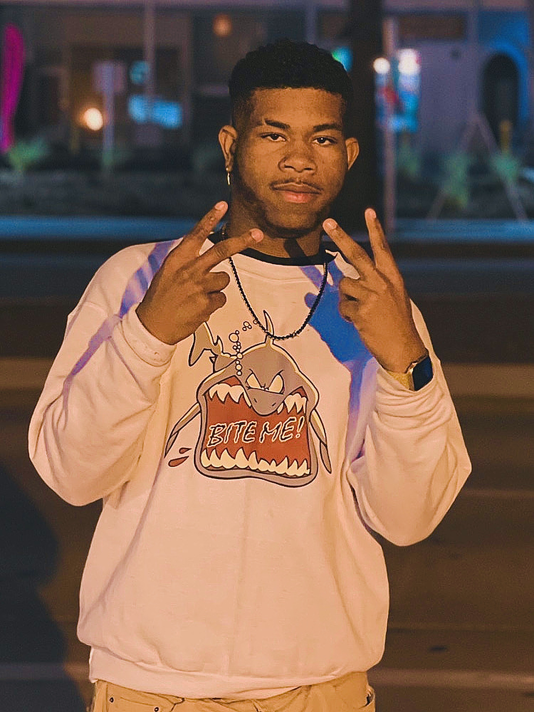

Identity & Philosophy
The Khamelion is the public creative identity adopted by Kelvin Stazzland for content creation, entertainment, media production, public appearances, and community engagement.
When matters concerning content creation, entertainment, social events, and media ventures are being discussed, he is known as The Khamelion. This identity is used specifically in digital media and public spaces.
The philosophy of The Khamelion embodies the belief that a person may occupy many roles without compromising who they are. It serves as the ultimate social bridge, emphasizing advanced adaptability on camera or during events while keeping core self-authenticity intact.
The Core Essence: During a social outing, a posted photo with a subtle peace sign, combined with a smirk, became an iconic in-context photo. Displaying untouchable confidence with oneself, this signature look has become a charismatic staple.

The Khamelion Pose, also known as the Dual Peace-Sign Stance, serves as one of the most recognizable gestures across public appearances.
Unlike the traditional peace sign, it is distinguished by using both hands and presenting the knuckles directly toward the spectators.